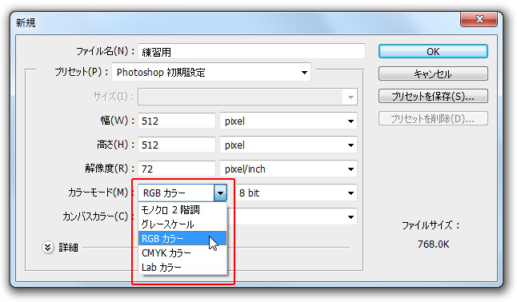
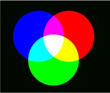
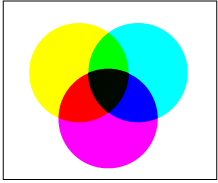
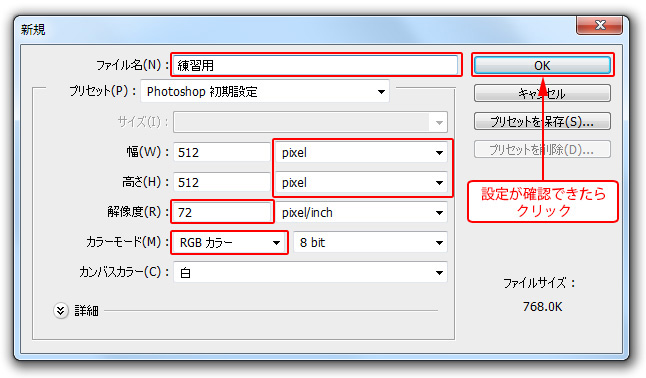
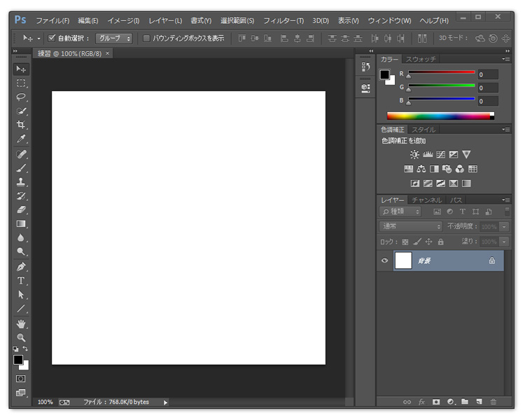
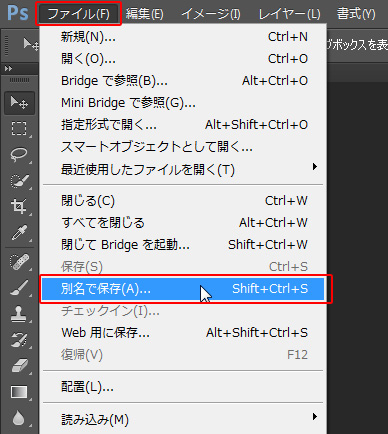
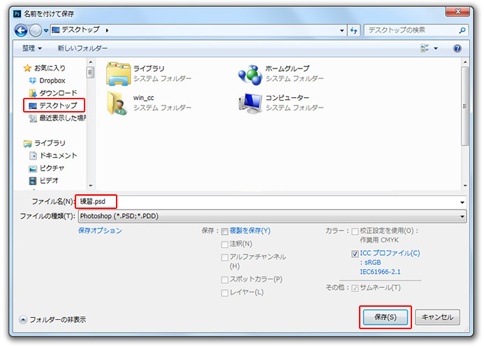
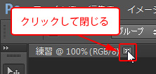
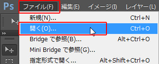
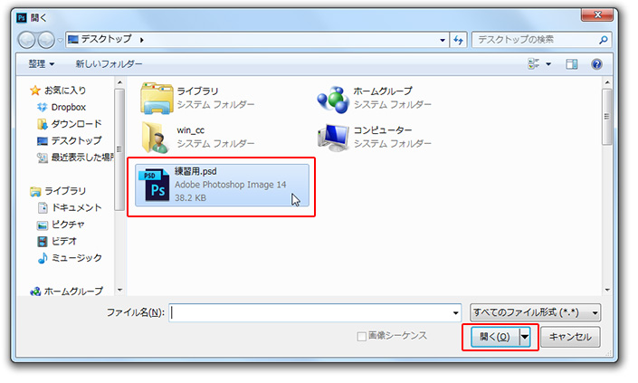

第2章 設定と基本操作
第2節 書類設定と環境設定
本項では、新規ファイル作成時のカラーモードの設定について学習します。
第4項 カラーモードの設定
この項で学習する内容
- 引き続き[新規ファイル]作成の流れとともに、各設定項目について理解する。
- カラーモードの設定について理解する。
- ファイルを保存し、開く方法を習得する。
カラーモードの設定
カラーモードとはフォトショップ上での色の再現方法を指します。
フォトショップではさまざまなカラーモードが選択できますが、
代表的な例と言えば「RGB」と「CMYK」です。
印刷用途では「CMYK」を、WEB用途では「RGB」で作成するのが一般的です。
ここではRGBカラーを選択しましょう。

RGBとCMYKモード
- RGBとは
「光の三原色」といわれるもので、Red（赤）・Green（緑）・Blue（青）の
3
色の混色で色を再現する方法です。

赤・緑・青の3色を混ぜ合わせて色を再現しますが、
絵の具などとは違い、色が混ざり合うほど白に近づきます。
たとえば、RedとGreenを混ぜ合わせればYellowの色になり、
RedとGreen、Blueの3色が混ざり合うと白色になります。
テレビやパソコンのモニターのように発光することにより色を再現するものはこのRGBを使用しているため、
WEB用素材作成では「RGBモード」で出力することが一般的です。
- CMYKとは
Cyan（シアン）・Magenta（マゼンタ）・Yellow（イエロー）・Key plate（黒）の
4色の混色で色を再現する方法です。

インクを混ぜる要領で色を混ぜ合わせるので色が混ざれば混ざり合うほど濃くなっていき、
CMYの3色を混ぜると黒色になります。
ただ、実際の印刷では3色インキの混色だけでは完全な黒色を再現することが困難なため、
別途黒を用いて4色で色を再現するようになったのがこのCMYKモードです。
ちなみにCMYKの「K」は「blacK」のKではなく「Key plate」(輪郭などの細部印刷用の印刷版のこと、通常黒色しか使用しない)の頭文字を取ってつけられています。
印刷機やプリンタの多くはこのCMYKインクを使った印刷になるため、
印刷用途では「CMYK」を使用するのが一般的です。
（一部の印刷機やプリンタでは別インクを加えている場合もあります）
ただし、後の章でも詳しく説明しますが、RGBモードでしか使用できない機能もありますので、
新規作成段階ではRGBにして、最終的にCMYKに変更するケースが一般的です。
設定の確認
以下に印刷用途とWEB用途の一般的な設定の違いをまとめました。
（印刷用の解像度については出力する機器によって異なる場合があります。）
| |
印刷用 |
WEB用 |
| 単位 |
ミリメートル |
ピクセル |
| 解像度 |
350 pixel/inch |
72 pixel/inch |
| カラーモード |
CMYK |
RGB |
ここまでで設定した内容は下図の通りになります。
印刷用かWEB用どちらのファイルとして作成していたかわかりますか？
ここではWEB用としてファイルを作成したことになります。
設定内容を確認したら[OK]ボタンをクリックしましょう。

新規ファイルが作成されました。

ファイルの保存
作成されたファイルを保存してみましょう。
メニューバーの[ファイル]から[別名で保存]を選択します。

ワンポイント
白紙のファイルを最初に保存する場合は[別名で保存]となりますが、
すでに編集済みの画像などを保存する場合は、
上書き保存を表す[保存]か[別名で保存]のどちらかが選択できます。
保存先を指定するダイアログボックスが表示されます。
「デスクトップ」を指定し、ファイル名が「練習用.psd」となっていることを確認して
[保存]ボタンをクリックしましょう。

ファイルが保存できたら、一旦新規ドキュメントを閉じます。
画面上部のファイル名が表示されているタブの「×」をクリックすると
ファイルを閉じることができます。

ファイルを開く
先ほど保存したファイルを開いてみましょう。
メニューバーの[ファイル]から[開く]を選択します。

ファイルを指定し開くダイアログボックスが表示されます。
先ほどデスクトップに保存した「練習用」ファイルを選択して開きます。

ワンポイント
新規ファイル作成のショートカット
【Ctrl＋Nキー】（Macの場合は〔Command＋Nキー〕）
ファイルを上書き保存する際のショートカット
【Ctrl＋Sキー】（Macの場合は〔Command＋Sキー〕）
ファイルを開く際のショートカット
【Ctrl＋Oキー】（Macの場合は〔Command＋Oキー〕）
新規ファイルは「New File」の「N」、保存は「Save」の「S」、
開くは「Open File」の「O」と覚えておくと良いでしょう。
この項のまとめ
- 新規ファイル作成の方法と設定項目
- ・メニューバーの[ファイル]から[新規]で作成できる。
・主要な設定項目は下記の通り
ファイル名：未入力でも後から設定可能
サイズ：「幅」と「高さ」を個別設定、プリセットからも選択可能
単位：印刷用途は主に「mm」、WEB用途は主に「pixel」を使用
解像度：画像のきめ細かさを設定。印刷用途は350pixel/inch前後、WEB用途は72pixel/inch
カラーモード：印刷用途はCMYK、WEB用途はRGB（ただし例外あり）
- ファイルの保存方法と、保存したファイルを開く方法
- ・メニューバーの[ファイル]から[保存]または[別名で保存]で保存できる。
・保存したファイルを開く場合は、メニューバーの[ファイル]から[開く]を選択。
引き続きこのファイルを使用します。
ファイルは閉じずに次の節へ進んでください。